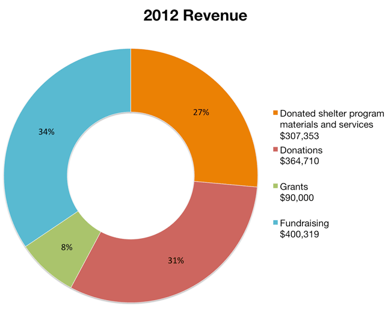

HomeAid Orange County, recognized as a leading non-profit, is committed to financial accountability and transparency. HomeAid participates with Charity Navigator, Guidestar, Great Nonprofits and Connect OC, operated by the Orange County Community Foundation to ensure supporters and others interested in learning more about the organization have easy access to information about HomeAid.
HomeAid’s vision is to end homelessness through advocacy, development and service. Charged with the mission to build new lives for homeless families and individuals through housing and community outreach, HomeAid has been working to solve the social crisis of homelessness for 25 years.



© 2014 HomeAid Orange County. HomeAid Orange County is a 501 c (3) non-profit organization – Tax ID 33-0568079
HomeAid Websites: HomeAid Essentials